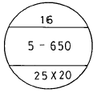
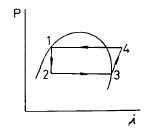
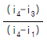
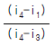
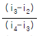
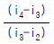

건축설비산업기사 (2004-03-07 기출문제)
1과목: 건축일반
1. 벽돌 공간쌓기로 얻을 수 있는 효과와 가장 거리가 먼 것은?
- 방습
- 방청
- 방음
- 방열
(정답률: 47%)

2. 철근콘크리트 슬래브에 대한 설명 중 잘못된 것은?
- 주근은 D10 이상을 사용한다.
- 단변방향의 철근을 주근이라 한다.
- 주근 간격은 20cm 이하로 한다.
- 배력근 간격은 30cm 이상으로 한다.
(정답률: 50%)
3. 다음 구조방식 중 일체식 구조에 해당하는 것은?
- 벽돌구조
- 철근콘크리트구조
- 철골구조
- 나무구조
(정답률: 100%)
4. 계단의 디딤판 끝에 대어 오르내릴때 미끄러지지 않게 하는 철물은?
- 코너비드(corner bead)
- 논슬립(non-slip)
- 레지스터(register)
- 테라코타(terra cotta)
(정답률: 100%)
5. 병원의 병실계획으로 알맞지 않은 것은?
- 창 면적은 바닥면적의 1/3 ∼ 1/4 정도로 한다.
- 병실 출입구의 폭은 90 ∼ 100cm 로 한다.
- 침대방향은 환자의 눈이 창과 직면하지 않는 방향으로 한다.
- 환자 머리 후면에 조명설비를 한다.
(정답률: 82%)
6. 창호와 창호 철물간의 조합으로 틀린 것은?
- 여닫이문 - 레일
- 회전창 - 지도리
- 오르내리창 - 크레센트
- 미서기창 - 꽂이쇠
(정답률: 90%)
7. 호텔 계획에 대한 설명으로 알맞지 않은 것은?
- 커머셜 호텔은 연면적에 대한 숙박면적의 비율이 리조트 호텔보다 크다.
- 클럽하우스는 스포츠시설을 위주로 이용되는 숙박시설을 갖추고 있다.
- 아파트먼트 호텔은 관광객, 단기체재자 등을 대상으로 하며, 스위트룸과 호화로운 설비를 하고 있다.
- 시티 호텔은 교통이 편리한 위치가 좋다.
(정답률: 79%)
8. 영식쌓기법에서 모서리 부분에 이오토막이나 반절을 사용하는 주된 이유는?
- 모서리 부분의 통줄눈을 피하기 위하여
- 모서리 부분의 시공 편리성을 위하여
- 모서리 부분의 미적효과를 위해서
- 모서리 부분의 벽돌절감을 위해서
(정답률: 100%)
9. 천정높이가 2.5m인 2인용 침실의 적당한 면적은 ? (단, 시간당 2회의 환기를 가정)
- 8m2
- 10m2
- 15m2
- 20m2
(정답률: 38%)
10. 벽돌벽면에 균열이 생기는 이유 중 시공상의 원인은?
- 기초의 부동침하
- 벽돌 및 모르타르의 강도 부족과 신축성
- 개구부 크기의 불합리ㆍ불균형 배치
- 건물의 평면ㆍ입면의 불균형
(정답률: 75%)
11. 철골구조의 보와 관계가 먼 부재는?
- 플랜지(flange)
- 스티프너(stiffener)
- 거셋 플레이트(gusset plate)
- 베이스 플레이트(base plate)
(정답률: 46%)
12. 개실형(복도형) 사무실에 대한 설명으로 알맞지 않은 것은?
- 방 길이에 변화를 줄 수 있다.
- 방 깊이에 변화를 줄 수 없다.
- 신축성이 있으며 전면적을 유용하게 이용할 수 있다.
- 독립성은 있으나 공사비가 비교적 높다.
(정답률: 42%)
13. 반자에 대한 설명 중 옳지 않은 것은?
- 널반자는 반자틀 밑에 널을 박아 마무리하는 반자이다.
- 살대반자에서 살대는 면을 접고 반자돌림에 통맞춤으로 한다.
- 치받이 널반자에서 널이음은 반자틀심에 일정히 엇갈려 있게 한다.
- 우물반자에서 반자틀이 서로 音자로 만나는 곳은 반턱맞춤을 한다.
(정답률: 100%)
14. 사무소에 있어서 중요 부분은 자기가 전용으로 사용하고 나머지를 대실하는 사무소의 분류상 명칭은?
- 대여 사무소
- 준전용 사무소
- 전용 사무소
- 준대여 사무소
(정답률: 72%)
15. 백화점 건축의 에스컬레이터에 관한 기술로서 알맞지 않은 것은 어느 것인가?
- 교차식 배치는 연속적으로 승강할 수 있지만 승객 시야가 나쁘다.
- 단속식(병렬 단층식) 배치는 승객 시야가 가장 좋다.
- 연속식(병렬 연층식) 배치는 승강의 위치가 떨어져 있으며 승객의 시야가 나쁘다.
- 직렬식 배치는 점유면적이 크나 승객의 시야가 좋다.
(정답률: 59%)
16. 학급과 학생 구분을 없애고 학생들이 각자의 능력에 맞게 교과를 선택하는 운영 방식은?
- 달톤형
- 플라툰형
- 종합교실형
- 교과교실형
(정답률: 74%)
17. 호텔의 평면 계획에 관한 설명 중 잘못된 것은?
- 관리부분은 각 부분과 신속한 연락이 가능해야 한다.
- 공공부분은 크게 수익성 부분과 비수익성 부분으로 구분된다.
- 숙박부분의 객실은 쾌적성과 개성을 필요로 하며, 필요에 따라서 변화성을 주어 호텔의 특성을 살려야 한다.
- 사교부분은 호텔의 가장 중요한 부분으로, 이에 의해 호텔의 형이 결정된다.
(정답률: 72%)
18. 사무소 건축에서 화장실의 위치를 결정할 때 올바른 방법이 아닌 것은?
- 각 사무실에 동선이 간단할 것
- 계단실, 엘리베이터 홀 등에 접근할 것
- 각 층마다 공통의 위치에 있을 것
- 여러 곳에 분산시켜서 접근이 용이하도록 할 것
(정답률: 95%)
19. 아파트의 중복도형에 대한 설명으로 옳지 않은 것은?
- 채광 및 통풍 조건을 양호하게 할 수 있다.
- 대지에 대해서 건물이용도가 높다.
- 프라이버시의 확보가 용이하지 않다.
- 독신자 아파트에 많이 이용된다.
(정답률: 65%)
20. 철근에 대한 콘크리트의 피복두께를 유지하여야 하는 직접적인 이유와 가장 관계가 먼 것은?
- 경제성
- 내구성
- 내화성
- 방청성
(정답률: 86%)
2과목: 위생설비
21. 고가수조 급수방식에 대한 설명 중 잘못된 것은?
- 대규모의 급수 수요에 대응할 수 없다.
- 일정한 수압으로 급수되므로 사용에 편리하다.
- 저수시간이 길어지면 수질이 나빠지기 쉽다.
- 단수가 잦은 지역내에서 급수방식으로 적합하다.
(정답률: 62%)
22. 다음 화재 감지기 중 연기 발생에 의한 감지기는?
- 차동식
- 이온화식
- 보상식
- 정온식
(정답률: 46%)
23. 급탕배관의 시공방법으로 부적절한 것은?
- 급탕설비의 저탕조와 배관은 열손실을 최소화하기 위해 보온처리를 하도록 한다.
- 중력순환식의 경우 구배는 1/150 정도, 강제순환식의 경우 구배는 1/200 정도로 한다.
- 배관 중에 사용되는 공기빼기 밸브는 글로우브 밸브를 피하고 슬루스 밸브를 사용하면 좋다.
- 온수의 온도에 따른 팽창을 고려하여 팽창관을 설치하고 팽창관 도중에 밸브를 부착한다.
(정답률: 62%)
24. 급탕배관 방법 중 복관식(2관식)으로 하는 이유는?
- 설비비를 절약하기 위하여
- 뜨거운 물을 가능한 한 빨리 나오게 하기 위하여
- 온수의 순환을 빠르게 촉진하기 위하여
- 보수관리를 편리하게 하기 위하여
(정답률: 67%)
25. 다음 중 펌프의 실양정을 바르게 나타낸 것은?
- 흡입양정+토출양정
- 흡입양정+전양정
- 흡입양정+손실수두
- 토출양정+손실수두
(정답률: 84%)
26. 급탕설비에서 스팀 사이렌서(steam silencer)가 사용되는 경우는?
- 기수 혼합식 탕비기
- 저탕형 탕비기
- 즉시 탕비기
- 순간 온수기
(정답률: 84%)
27. 급수배관에서 슬리브(Sleeve)를 설치하는 이유로 가장 적당한 것은?
- 동파방지
- 수격작용방지
- 부식방지
- 관의 수리시 교체의 용이
(정답률: 73%)
28. 옥외소화전을 2개 설치할 때 필요한 수원의 최소 수량으로 맞는 것은?
- 0.4m3
- 14m3
- 35m3
- 40m3
(정답률: 70%)
29. 배관용 동관은 M, L 및 K 타입으로 구분되는데, 이들 타입의 차이점은 무엇인가?
- 관의 두께
- 배관 1본의 길이
- 관의 외경
- 관의 호칭경
(정답률: 77%)
30. 수중유기물이 분해해서 안정한 산화물이 되기까지 얼마나 산소를 소비했는가를 표시하는 것으로 수질 오염의 지표가 되는 용어는?
- COD
- BOD
- SS
- DO
(정답률: 86%)
31. 다음 중 통기효과가 가장 좋은 통기방식은?
- 각개통기 방식
- 회로통기 방식
- 신정통기 방식
- 결합통기 방식
(정답률: 92%)
32. 워터햄머가 발생하기 쉬운 장소로서 틀린 것은?
- 수온이 낮은 곳
- 수주분리가 일어나기 쉬운 배관부분
- 굴곡이 많은 배관부분
- 관내의 상용압력이 현저히 높은 장소
(정답률: 82%)
33. LPG의 특성에 대한 설명 중 옳지 않는 것은?
- 상온상압하에서 기체이지만 가압이나 냉각을 하면 쉽게 액화한다.
- 발열량이 높아 단시간에 온도를 높일 수 있다.
- 공기보다 무거우므로 누설되면 대기중으로 확산되지 않고 지면에 체류한다.
- 인체에 유해한 일산화탄소가 함유되어 있어 많은 양을 흡입하면 중추신경마비현상을 일으킨다.
(정답률: 67%)
34. 다음 중 통기관의 설치목적과 가장 관계가 먼 것은?
- 트랩의 봉수 보호
- 배수계통내의 환기
- 배수흐름의 원활
- 실내로의 냄새, 벌레의 침입방지
(정답률: 80%)
35. 배수 배관에서 청소구를 설치할 곳으로 적당하지 않은 것은?
- 배수 수평관에서 관경이 100A 이하일 때에는 직진거리 30m 이내마다 1개소씩 설치한다.
- 옥내배수관과 부지하수관이 접속되는 곳에 설치한다.
- 배수 수평지관의 최상단부에 설치한다.
- 배수 수직관의 최하단부에 설치한다.
(정답률: 알수없음)
36. 트랩의 종류와 그 사용용도가 가장 부적당한 것은?
- Grease Trap - 식당의 배수
- Garage Trap - 차고용 배수
- Bell Trap - 욕실 바닥
- Gasoline Trap - 병원, 정형외과의 배수
(정답률: 59%)
37. 고가수조방식을 채택한 건물에서 최상층에 샤워기가 설치되어 있을 경우 샤워기로부터 고가수조 최저수위면까지의 필요최저높이는 얼마인가 ?(단, 고가수조와 샤워기까지의 총 관내마찰손실수두는 5[mAq]이다.)
- 1.2m
- 12m
- 7.5m
- 15m
(정답률: 75%)
38. 200인용 부패탱크식 오물정화조의 부패조 유효용량은 최소 얼마 이상인가?
- 20m3
- 21m3
- 22m3
- 23m3
(정답률: 28%)
39. 급수관의 수압시험 방법에 대한 설명 중 옳지 않은 것은?
- 배관의 일부 또는 전부를 완료하였을 때 개구부를 플러그로 막고 실시한다.
- 배관 도중에 일시적으로 설치된 공기 빼기 밸브를 사용하여 완전히 배기한 후에 서서히 가압을 하면서 행한다.
- 시험압력의 유지시간은 시험압력에 도달한 후, 배관 공사의 경우는 최소 10분으로 한다.
- 고가수조 이하 계통의 시험압력은 배관의 최저부에서 실제로 받는 압력의 2배 이상으로 한다.
(정답률: 39%)
40. 다음 중 사무실, 학교, 공장, 극장, 백화점 등 사용빈도가 많거나 일시적으로 많은 사람들이 연속하여 사용하는 경우에 가장 적합한 대변기는?
- 하이탱크식
- 로우탱크식
- 세정밸브식
- 기압탱크식
(정답률: 74%)
3과목: 공기조화설비
41. 단일덕트 가변풍량 방식을 설명한 것이다. 틀린 것은?
- 운전비를 절감할 수 있다.
- 정풍량 방식에 비해 설비비가 저렴하다.
- 중간기의 외기냉방이 가능하다.
- 송풍량을 조절함으로써 부하변동에 대처한다.
(정답률: 77%)
42. 건물의 환기부하 계산시 1인당 필요한 외기량을 가장 많게 적용해야 하는 건물은?
- 식당
- 은행
- 병원
- 극장
(정답률: 알수없음)
43. 동일 송풍기에서 회전수를 2배로 했을 경우 풍량, 정압 및 소요 동력의 변화량에 대해 옳은 것은?
- 풍량 1배, 정압 2배, 소요동력 2배
- 풍량 1배, 정압 2배, 소요동력 4배
- 풍량 2배, 정압 4배, 소요동력 4배
- 풍량 2배, 정압 4배, 소요동력 8배
(정답률: 47%)
44. 방화댐퍼용 퓨즈의 용융온도는?
- 48℃
- 72℃
- 96℃
- 120℃
(정답률: 73%)
45. 공기량 G=300kg/h, 절대습도 χ1=0.006kg/kg'인 공기를 χ2=0.012kg/kg'까지 가습하는 경우 공급 수량을 구하시오.
- 0.9kg/h
- 1.8kg/h
- 2.7kg/h
- 3.6kg/h
(정답률: 62%)
46. 에너지절감을 목적으로 사용하는 전열교환기는 어떤 열을 회수하는 장치인가?
- 복사열
- 대류열
- 엔탈피
- 엔트로피
(정답률: 57%)
47. 증기코일에서 풍속을 4m/s, 입구공기온도 10℃, 출구공기 온도 24℃, 가열부하 72,800Kcal/h, 열관류율 525Kcal/m2h℃, 코일면적 1.21m2일 때 코일열수는 얼마인가 ?(단, 증기온도 106℃)
- 1열
- 2열
- 3열
- 4열
(정답률: 38%)
48. 다음 그림과 같은 방열기의 제원 중 표시되어 있지 않은 것은?

- 방열기 쪽수
- 방열기 높이
- 접속 관경
- 방열기 무게
(정답률: 85%)
49. 어떤 사무실의 난방부하가 9000kcal/h일 때, 증기방열기와 온수방열기의 소요방열면적(EDR)은 각각 몇 m2인가?
- 11.9 20
- 12.9 20
- 13.9 20
- 13.9 25
(정답률: 60%)
50. 냉각탑 설치시 주의점 중 틀린 것은?
- 냉각탑은 냉동기마다 개별로 설치한다.
- 대기오염이 심한지역은 개방식 냉각탑을 사용하는 것이 바람직하다.
- 동결방지를 위해 냉각탑에는 탱크내에 전열기를 부착한다.
- 필요에 따라 적당한 차음장치를 설치한다.
(정답률: 63%)
51. 다음 그림은 응축기의 방열을 이용하는 히트 pump사이클의 이론 P-i선도이다. 히트펌프 성적계수 정의 중 옳은 것은?





(정답률: 67%)
52. 건축재료의 열전도률(λ )에 대한 특징을 설명한 것중 틀린 것은?
- 건조하게 되면 커진다.
- 밀도가 크게 되면 커진다.
- 고온측에서 저온측으로 단위두께와 단위시간, 단위 온도차당 열이 옮아가는 비율을 말한다.
- 열전도율이 낮을수록 단열이 우수하다.
(정답률: 50%)
53. 보온재 중에서 안전 사용온도가 가장 높은 재료는?
- 암면
- 글래스울
- 규조토
- 우모펠트
(정답률: 64%)
54. 대형 차고에 환기를 시킬 경우 환기의 방향이 옳은 것은?
- 상부급기와 상부배기
- 상부급기와 하부배기
- 하부급기와 상부배기
- 하부급기와 하부배기
(정답률: 50%)
55. 공조기 출구와 덕트 접속시 주의점 중 틀린 것은?
- 주관덕트와 연결에 사용되는 이음새의 경사는 1/7 이하로 한다.
- 엘보에 사용되는 베인은 2중 베인으로 한다.
- 직관부의 길이는 송풍기 출구에서의 장변치수의 5배로 한다.
- 주덕트로 연결되는 곳은 캔버스 이음으로 한다.
(정답률: 50%)
56. 온수배관에 관한 기술 중 부적당한 것은?
- 팽창관에 게이트 밸브를 설치한다.
- 펌프의 흡입측에 스트레이너를 설치한다.
- 유량 분배를 균일하게 하기 위하여 리버스리턴 방식을 채용한다.
- 배관의 신축을 고려하여야 한다.
(정답률: 알수없음)
57. 전열교환기를 사용할 때의 이점이 아닌 것은?
- 외기부하의 감소
- 열원기기 용량 감소
- 운전비 감소
- 기계실 스페이스 감소
(정답률: 알수없음)
58. 다음중 한국산업규격 KSD에 해당되지 않는 재료는?
- 강관
- 동관
- 주철관
- 염화비닐관
(정답률: 67%)
59. 공기조화방식 중 실내에 설치되어 있는 말단 유닛까지 냉온수 배관이 연결되어야만 하는 것은?
- VAV방식
- 각층 유닛 방식
- 유인 유닛 방식
- 이중 덕트 방식
(정답률: 70%)
60. 다음 TAC 온도에 관한 기술 중 부적당한 것은?
- 위험율 2.5%란 확률적으로 2.5%에 해당하는 시간은 설계용 외기조건을 초과한다는 것을 의미한다.
- 기간부하를 계산할 경우에 이용한다.
- TAC는 Technical Advisory Committee의 약자이다.
- 에너지의 효율적 이용을 위한 것이다.
(정답률: 25%)
4과목: 건축설비관계법규
61. 스프링클러헤드를 설치하는 천정· 반자· 천정과 반자사이· 닥트· 선반 등의 각부분으로부터 하나의 스프링클러헤드까지의 수평거리로 맞는 것은?
- 일반건축물은 2.5m 이하
- 랙크식창고는 2.5m 이하
- 아파트는 4m 이하
- 무대부,특수가연물 저장 또는 취급하는 장소는 3.0m이하
(정답률: 30%)
62. 시장· 군수· 구청장이 설치하는 공중화장실의 설치· 관리기준에 관한 사항 중 잘못된 것은?
- 전체면적은 30m2이상일 것
- 대변기 11개이상, 소변기 5인용 이상을 설치할 것
- 대변기의 칸막이 규격은 짧은 변이 85㎝이상, 긴변이 115㎝이상(양변기가 아닌 경우)일 것
- 대변기 및 소변기는 수세식으로 할 것
(정답률: 54%)
63. 건축물의 출입구에 회전문을 설치하는 경우에 계단으로부터 얼마 이상 떨어져 설치하여야 하는가?
- 1.5m
- 2.0m
- 2.5m
- 3.0m
(정답률: 75%)
64. 바닥면적의 합계가 1,500제곱미터인 공동주택 중 기숙사의 신축시 에너지절약계획서는 언제 제출하여야 하는가?
- 건축허가 신청시
- 건축착공 신고시
- 중간검사 신고시
- 제출할 필요 없음 연배배
(정답률: 37%)
65. 옥내소화전을 설치하여야 하는 소방대상물(지하가중 터널을 제외)의 연면적의 기준은?
- 1000m2이상
- 2000m2이상
- 3000m2이상
- 3300m2이상
(정답률: 29%)
66. 바닥면적이 50m2를 넘는 지하층에 1개소의 직통계단과 지상으로 통하는 비상탈출구 및 환기통을 설치하려고 한다. 이 경우 비상탈출구의 구조기준으로 부적합한 것은?
- 비상탈출구의 문은 실내에서 항상 열수 있는 구조로 할 것
- 비상탈출구의 유효너비는 0.75m 이상으로 할 것
- 비상탈출구는 출입구로부터 3m 이상 떨어진 곳에 설치할 것
- 비상탈출구에서 피난층 또는 지상으로 통하는 복도 또는 직통계단까지 이르는 피난통로의 유효너비는 1.2m이상으로 할 것
(정답률: 50%)
67. 방염성능의 기준은 탄화한 면적과 탄화한 길이는 각각 얼마 이내에서 정해질 수 있는가? (순서대로 탄화면적/탄화한 길이)
- 50㎝2 / 10㎝
- 10㎝2 / 50㎝
- 20㎝2 / 50㎝
- 50㎝2 / 20㎝
(정답률: 50%)
68. 다음 행위 중 피뢰설비의 기준에 적합하지 않은 것은?
- 주유소 피뢰도체의 보호각은 60도로 설계했다.
- 돌침은 지름 15밀리미터의 알루미늄으로 한국산업규격에 적합한 것을 사용했다.
- 피뢰도선은 그 단면적이 동의 경우 30제곱밀리미터를 한국산업규격에 적합한 것을 사용했다.
- 인하도선 사이의 간격은 40미터로 했다.
(정답률: 39%)
69. 폐쇄형 스프링클러설비의 기준에 맞지 않는 것은?
- 하나의 방호구역의 바닥면적은 3,000m2를 초과하지 아니할 것
- 하나의 방호구역에는 2개이상의 유수검지장치 및 일제개방밸브를 설치할 것
- 하나의 방호구역은 2개층에 미치지 아니하도록 할 것
- 유수검지장치등은 바닥으로부터 0.8m이상 1.5m이하의 위치에 설치할 것
(정답률: 46%)
70. 피난층 또는 지상으로 통하는 직통계단을 특별피난계단의 구조로 해야하는 공동주택의 층은?
- 10층 이상의 층
- 11층 이상의 층
- 15층 이상의 층
- 16층 이상의 층
(정답률: 39%)
71. 판매 및 영업시설 중 소매시장의 용도에 쓰이는 바닥면적이 최대인 층이 600m2일 때 피난층에 설치하는 건축물의 바깥쪽으로 출구의 유효너비 합계는?
- 2.4m
- 3.0m
- 3.6m
- 4.2m
(정답률: 39%)
72. 거실의 창 기타의 개구부로서 채광을 위한 부분의 면적은 그 거실의 바닥면적의 얼마이상이어야 하는가?
- 1/5
- 1/10
- 1/20
- 1/50
(정답률: 59%)
73. 지하층의 바닥면적이 얼마이상인 층에는 식수공급을 위한 급수전을 1개소이상 설치하여야 하는가?
- 200제곱미터
- 300제곱미터
- 400제곱미터
- 500제곱미터
(정답률: 60%)
74. 단독정화조 구조물의 윗부분이 밀폐되는 경우에는 뚜껑을 설치하되, 뚜껑은 밀폐할 수 있어야 하며 잠금장치를 설치하거나 뚜껑 밑에 격자형의 철망 등을 설치하여 안전하게 해야 한다. 이 때 처리대상인원이 10인 이하인 경우 뚜껑의 직경은?
- 45㎝ 이상
- 50㎝ 이상
- 55㎝ 이상
- 60㎝ 이상
(정답률: 39%)
75. 구조계산에 의한 구조안전 확인을 해야 할 대상건축물과 관계가 없는 것은?
- 건축물의 층수
- 건축물의 용도
- 건축물의 높이
- 건축물의 기둥과 기둥 사이의 거리
(정답률: 65%)
76. 특별시· 광역시 및 도의 소방· 구조· 구급 등의 업무를 담당하는 부서의 장은?
- 경찰청장
- 시· 도지사
- 소방서장
- 소방본부장
(정답률: 42%)
77. 1일 처리용량이 ( )m3 이상인 오수처리시설 또는 1일 처리대상인원이 ( )인 이상인 단독정화조에서 배출되는 방류수에 대하여는 염소 등에 의한 소독을 할 것. 여기서 ( )속에 맞는 숫자는?
- 100(m3), 500(인)
- 500(m3), 100(인)
- 200(m3), 1,600(인)
- 1,600(m3), 200(인)
(정답률: 50%)
78. 건축법상 건축물에 설치하는 건축설비에 해당하지 않는 것은?
- 굴뚝
- 차고
- 피뢰침
- 국기게양대
(정답률: 알수없음)
79. 차고· 주차장으로 사용하는 층중 바닥면적이 몇 제곱미터 이상인 층이 있는 것은 소방본부장 또는 소방서장의 건축허가 및 사용승인의 동의대상물이 되는가?
- 100m2 이상
- 200m2 이상
- 300m2 이상
- 400m2 이상
(정답률: 50%)
80. 다음 건축물 중 건축법상 배연설비를 하지 않아도 되는 건축물은?
- 6층의 영화관
- 6층의 호텔
- 7층의 교회
- 7층의 대학 강의동
(정답률: 70%)